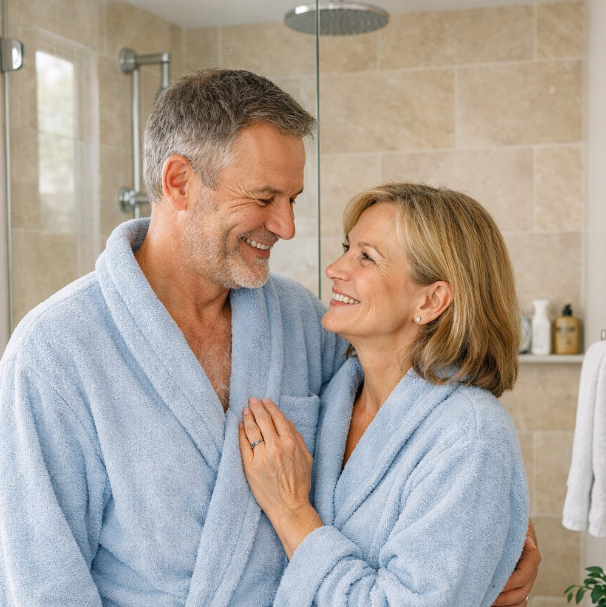

Basis (zoals op de pagina): titel "Blijf langer jong in uw eigen badkamer." · belofte "In één dag van een gevaarlijke badkuip naar een veilige inloopdouche of douchecabine." · knop "Bel 0493 33 39 88" · stempel BADKAMERGEVOEL. Elke kaart verandert één ding; de stippellijn toont wat.
Titel · jong
De invalshoek van de klant: positief, spreekt over levenskwaliteit in plaats van over ouderdom.

BadkamergevoelIn één dag van een gevaarlijke badkuip naar een veilige inloopdouche of douchecabine.
Bel 0493 33 39 88Titel · zelfstandigheid
Raakt de diepste wens (thuis blijven wonen) en spreekt ook de bezorgde kinderen aan.
In één dag van een gevaarlijke badkuip naar een veilige inloopdouche of douchecabine.
Bel 0493 33 39 88Titel · veiligheid
Meest directe zoekvraag; de belofte "in één dag" schuift naar de titel en valt uit de onderregel.
Van een gevaarlijke badkuip naar een veilige inloopdouche of douchecabine.
Bel 0493 33 39 88Belofte · kenmerken
Voor wie al vergelijkt: noemt wat hij krijgt (lage instap, onderhoudsvriendelijk) in één zin.
In één dag een inloopdouche of douchecabine met lage instap. Onderhoudsvriendelijk.
Bel 0493 33 39 88Belofte · voordeel
Vertaalt de lage instap naar wat de lezer voelt: geen hoge rand meer, ook alleen thuis.
In één dag weer zorgeloos douchen: geen hoge rand meer, ook als u alleen thuis bent.
Bel 0493 33 39 88Knop · afspraak
Lagere drempel dan bellen voor wie liever niet telefoneert; leidt naar het contactformulier.
In één dag van een gevaarlijke badkuip naar een veilige inloopdouche of douchecabine.
Plan direct een afspraakKnop · gratis advies
Zegt wat de eerste stap oplevert en dat die niets kost; Claude komt zelf langs.
In één dag van een gevaarlijke badkuip naar een veilige inloopdouche of douchecabine.
Gratis adviesgesprek bij u thuisZonder stempel
Test of de herkenning met de advertentie de stempel nodig heeft, of de foto alleen volstaat.
In één dag van een gevaarlijke badkuip naar een veilige inloopdouche of douchecabine.
Bel 0493 33 39 88